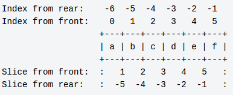

When getting items from a list, if no index is supplied or an invalid index is given, Python throws error.
In [4]: alpha = ['a', 'b', 'c', 'd', 'e', 'f']
In [5]: alpha[21]
---------------------------------------------------------------------------
IndexError Traceback (most recent call last)
<ipython-input-5-3b7fb56a1ede> in <module>()
----> 1 alpha[21]
IndexError: list index out of range
In [6]: alpha[]
File "<ipython-input-6-a17d5cfb2c2f>", line 1
alpha[]
^
SyntaxError: invalid syntax
When slicing a list, if start/stop/step values are not supplied or invalid values are provided, Python figures out appropriate values and returns relevant items or an empty list depending on the values.
In [170]: alpha
Out[170]: ['a', 'b', 'c', 'd', 'e', 'f']
In [172]: alpha[:]
Out[172]: ['a', 'b', 'c', 'd', 'e', 'f']
In [173]: alpha[::]
Out[173]: ['a', 'b', 'c', 'd', 'e', 'f']
In [174]: alpha[:-1:]
Out[174]: ['a', 'b', 'c', 'd', 'e']
In [175]: alpha[:2:-1]
Out[175]: ['f', 'e', 'd']
In [176]: alpha[:100000000000000000000000000000000000000000000000]
Out[176]: ['a', 'b', 'c', 'd', 'e', 'f']
In [177]: alpha[::1000000000]
Out[177]: ['a']
In [178]: alpha[::-1]
Out[178]: ['f', 'e', 'd', 'c', 'b', 'a']
There is something interesting happening with python slicing. Lets see how python slicing works and what happens behind the scenes.
Slicing Is NOT Indexing:
Wiki Python
has this amazing picture which clearly distinguishes indexing and slicing.

It is a list with 6 elements in it. To understand slicing better, consider that list as a set of six boxes placed together. Each box has an alphabet in it.
Indexing is like dealing with the contents of box. You can check
contents of any box. But You can't check contents of multiple boxes at
once. You can even replace contents of the box. But You can't place 2
balls in 1 box or replace 2 balls at a time.
In [122]: alpha = ['a', 'b', 'c', 'd', 'e', 'f']
In [123]: alpha
Out[123]: ['a', 'b', 'c', 'd', 'e', 'f']
In [124]: alpha[0]
Out[124]: 'a'
In [127]: alpha[0] = 'A'
In [128]: alpha
Out[128]: ['A', 'b', 'c', 'd', 'e', 'f']
In [129]: alpha[0, 1]
---------------------------------------------------------------------------
TypeError Traceback (most recent call last)
<ipython-input-129-c7eb16585371> in <module>()
----> 1 alpha[0,1]
TypeError: list indices must be integers, not tuple
Slicing is like dealing with boxes itself. You can pickup first box and
place it on another table. To pickup the box all You need to know is the
position of beginning & ending of the box.
You can even pickup first 3 boxes or last 2 boxes or all boxes between 1
& 4. So, You can pick any set of boxes if You know beginning & ending.
This positions are called start & stop positions.
The interesting thing is that You can replace multiple boxes at once.
Also You can place multiple boxes where ever You like.
In [130]: alpha[0:1]
Out[130]: ['A']
In [131]: alpha[0:1] = 'a'
In [132]: alpha
Out[132]: ['a', 'b', 'c', 'd', 'e', 'f']
In [133]: alpha[0:2] = ['A', 'B']
In [134]: alpha
Out[134]: ['A', 'B', 'c', 'd', 'e', 'f']
In [135]: alpha[2:2] = ['x', 'xx']
In [136]: alpha
Out[136]: ['A', 'B', 'x', 'xx', 'c', 'd', 'e', 'f']
Slicing With Step:
Till now You have picked boxes continuously. But some times You need to
pickup discretely. For example You can pickup every second box. You can
even pickup every third box from the end. This value is called step
size. This represents the gap between Your successive pickups. The step
size should be positive if You are picking boxes from the beginning to
end and vice versa.
In [137]: alpha = ['a', 'b', 'c', 'd', 'e', 'f']
In [142]: alpha[1:5:2]
Out[142]: ['b', 'd']
In [143]: alpha[-1:-5:-2]
Out[143]: ['f', 'd']
In [144]: alpha[1:5:-2]
Out[144]: []
In [145]: alpha[-1:-5:2]
Out[145]: []
How Python Figures Out Missing Parameters:
When slicing if You leave out any parameter, Python tries to figure it
out automatically.
If You check source code of CPython, You will find a function called
PySlice_GetIndicesEx which
figures out indices to a slice for any given parameters. Here is the
logical equivalent code in Python.
This function takes a Python object & optional parameters for slicing
and returns start, stop, step & slice length for the requested slice.
def py_slice_get_indices_ex(obj, start=None, stop=None, step=None):
length = len(obj)
if step is None:
step = 1
if step == 0:
raise Exception("Step cannot be zero.")
if start is None:
start = 0 if step > 0 else length - 1
else:
if start < 0:
start += length
if start < 0:
start = 0 if step > 0 else -1
if start >= length:
start = length if step > 0 else length - 1
if stop is None:
stop = length if step > 0 else -1
else:
if stop < 0:
stop += length
if stop < 0:
stop = 0 if step > 0 else -1
if stop >= length:
stop = length if step > 0 else length - 1
if (step < 0 and stop >= start) or (step > 0 and start >= stop):
slice_length = 0
elif step < 0:
slice_length = (stop - start + 1)/(step) + 1
else:
slice_length = (stop - start - 1)/(step) + 1
return (start, stop, step, slice_length)
This is the intelligence that is present behind slices. Since Python has inbuilt function called slice, You can pass some parameters & check how smartly it calculates missing parameters.
In [21]: alpha = ['a', 'b', 'c', 'd', 'e', 'f']
In [22]: s = slice(None, None, None)
In [23]: s
Out[23]: slice(None, None, None)
In [24]: s.indices(len(alpha))
Out[24]: (0, 6, 1)
In [25]: range(*s.indices(len(alpha)))
Out[25]: [0, 1, 2, 3, 4, 5]
In [26]: s = slice(None, None, -1)
In [27]: range(*s.indices(len(alpha)))
Out[27]: [5, 4, 3, 2, 1, 0]
In [28]: s = slice(None, 3, -1)
In [29]: range(*s.indices(len(alpha)))
Out[29]: [5, 4]
This is how Python is able to figure out missing parameters from slices.
I started digging this after attending a talk by Anand B. Pillai on python gotchas. Thanks to Anand B. Pillai & Krace Kumar for conducting BangPypers meetup & encouraging to checkout Python source code.
References:
Wiki Python: https://wiki.python.org/moin/
CPython repo: https://github.com/python/cpython
Slice on SO: http://stackoverflow.com/questions/509211/explain-pythons-slice-notation
Docs for slice: https://docs.python.org/3.4/library/functions.html#slice
Python/C API for slice: https://docs.python.org/3.4/c-api/slice.html